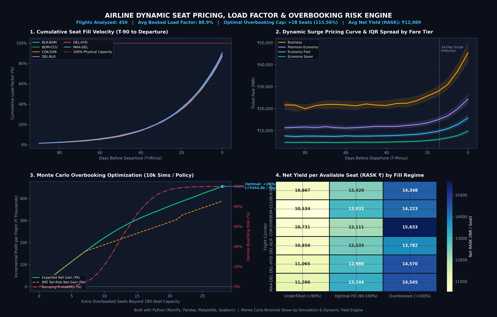

Manikandan M
Aspiring Data Analyst transforming multichannel transactional data into executive risk intelligence dashboards using Power BI, DAX, and SQL.
Featured Projects

Enterprise Fraud Detection & Risk Analytics Suite
A 4-page production-grade Power BI dashboard suite monitoring anomaly distributions, behavioral velocities, and Card-Not-Present (CNP) fraud exposures across ATM, POS, Web Banking, and Mobile channels.
Explore Repository & Specs →
Adolescent Digital Health & Behavioral Diagnostics Suite
End-to-end clinical telemetry pipeline across 1,200 adolescents (ages 13–19) isolating a 40% clinical sleep debt burden. Features Python feature engineering (NumPy, Pandas, SciPy), two-sample T-test hypothesis validation, SQLite window functions, and an executive 4-page Power BI diagnostics suite.
Explore Repository & Specs →
Netflix Real-Time Content & Audience Analytics
An end-to-end streaming intelligence pipeline analyzing Netflix's global catalog, genres, ratings, and year-over-year additions. Features data cleaning in Python (Pandas & NumPy), SQLite analytical window functions, and an interactive 4-page Power BI dashboard suite with dynamic left-rail navigation.
Explore Repository & Specs →
Healthcare Patient & Financial Analytics Dashboard
An interactive 4-page Power BI dashboard evaluating 55.5K+ patient admissions, operational workflows, and $1.42B in billing across clinical conditions, demographics, and insurance providers.
Explore Repository & Specs →
OTT Content Binge Velocity & Post-Finale Churn Analytics
Modeled 7,810 streaming sessions across 1,000 subscribers using Pandas, NumPy, Matplotlib, and Seaborn. Engineered Binge Velocity (episodes/day) and completion metrics, revealing an immediate post-finale churn spike reaching 49.69% among fast bingers (Q3/Q4). Exported 83 high-priority intervention targets for retention campaigns.
Explore Repository & Specs →
Statistical Experimentation & Causal Inference Engine
First-principles A/B experimentation and causal inference pipeline across 12,000 users using strictly NumPy, Pandas, Matplotlib, and Seaborn. Implemented SRM guardrails (p = 0.208), Wilson score CIs (+2.45 pp lift), CUPED variance reduction (-94.5% variance), tie-corrected Mann-Whitney U tests, and 10k-draw Monte Carlo bootstrap resampling.
Explore Repository & Specs →
Financial Transaction & Customer Spending Analysis
Analyzed customer shopping transactions using Python to identify customer spending patterns, product category performance, payment preferences, age-group behavior, monthly trends, and shopping mall performance. Performed data cleaning, statistical analysis, customer segmentation, and exploratory data analysis.
Explore GitHub Repository →
Airline Dynamic Seat Pricing & Overbooking Risk Simulator
End-to-end aviation revenue management engine cleaning 68,000+ raw PNR bookings, modeling dynamic surge pricing curves, and running 290,000 vectorized NumPy Monte Carlo simulations to optimize seat overbooking caps vs. denied-boarding tail risk.